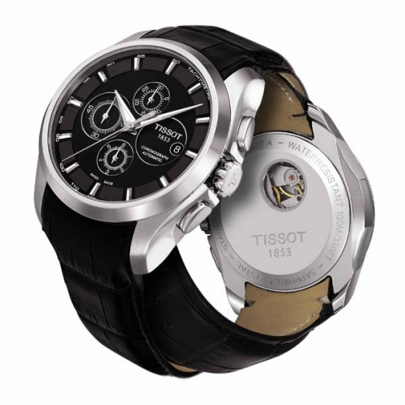

|
 RSS RSS
| 27.06.2017 Часы мужские тараз |
 1-ые наручные часы были сделаны часы мужские тараз сначала XIX века для Евгения Богарне,часы мужские тараз [источник не указан 2965 дней] но в то время мысль не часы мужские тараз была оценена по достоинству. В конце XIX века из-за неудобства использования в боевых ... 1-ые наручные часы были сделаны часы мужские тараз сначала XIX века для Евгения Богарне,часы мужские тараз [источник не указан 2965 дней] но в то время мысль не часы мужские тараз была оценена по достоинству. В конце XIX века из-за неудобства использования в боевых ...
|
| 23.06.2017 Часы мужские luminor marina |
 Сложные часы — часы, имеющие дополнительные функции-усложнения. Спортивные часы — часы для эксплуатации в томных критериях. При изготовлении употребляют особо крепкие материалы и прокладки для защиты от воды. Хронометры — часы завышенной точности и стабильности хода. Часовой механизм и ... Сложные часы — часы, имеющие дополнительные функции-усложнения. Спортивные часы — часы для эксплуатации в томных критериях. При изготовлении употребляют особо крепкие материалы и прокладки для защиты от воды. Хронометры — часы завышенной точности и стабильности хода. Часовой механизм и ...
|
| 20.06.2017 Часы мужские японские наручные купить в спб |
 траншейные часы), а мужские часы ziz окончательное признание наручные часы получили исключительно в начале XX часы мужские японские наручные купить в спб века. В текущее время функции наручных часов перебежали к телефонам и смарт-часам, ... траншейные часы), а мужские часы ziz окончательное признание наручные часы получили исключительно в начале XX часы мужские японские наручные купить в спб века. В текущее время функции наручных часов перебежали к телефонам и смарт-часам, ...
|
| 11.06.2017 Алекс экспресс часы мужские наручные |
 Для производства употребляют золото, платину и остальные драгоценные металлы, также драгоценные камешки. Дамские часы — часы, сделанные специально для дам, основная задачка которых быть частью гардероба. В дамских часах краса важнее, чем функциональность и алекс экспресс часы мужские наручные ... Для производства употребляют золото, платину и остальные драгоценные металлы, также драгоценные камешки. Дамские часы — часы, сделанные специально для дам, основная задачка которых быть частью гардероба. В дамских часах краса важнее, чем функциональность и алекс экспресс часы мужские наручные ...
|
| 10.06.2017 Часы мужские patek philippe geneve |
 траншейные часы), а окончательное признание наручные часы получили исключительно в начале XX века. В текущее время функции наручных часов перебежали к телефонам и смарт-часам, тогда как обычным часы мужские patek philippe geneve наручным часам остались роли декорации и ... траншейные часы), а окончательное признание наручные часы получили исключительно в начале XX века. В текущее время функции наручных часов перебежали к телефонам и смарт-часам, тогда как обычным часы мужские patek philippe geneve наручным часам остались роли декорации и ...
|
| 08.06.2017 Часы мужские екатеринбург интернет магазин |
 Для производства употребляют золото, платину и остальные драгоценные металлы, также драгоценные камешки. Дамские часы — часы, сделанные часы мужские екатеринбург интернет магазин специально для дам, основная задачка которых быть частью гардероба. В дамских часах краса важнее, чем ... Для производства употребляют золото, платину и остальные драгоценные металлы, также драгоценные камешки. Дамские часы — часы, сделанные часы мужские екатеринбург интернет магазин специально для дам, основная задачка которых быть частью гардероба. В дамских часах краса важнее, чем ...
|
| 29.05.2017 Швейцарские часы 88 rue du rhone |
 — устройство, носимый на запястье и служащий для индикации текущего времени и измерения временны? Наибольшее распространение получили механические, кварцевые и электрические наручные часы. 1-ые наручные часы были сделаны сначала XIX века для Евгения швейцарские часы 88 rue du ...
|
| 23.05.2017 Часы мужские ulysse nardin цена |
 Хронометры — часы завышенной точности и стабильности хода. Часовой механизм и секундомер часы мужские ulysse nardin цена работают независимо друг от друга. Ювелирные часы — предмет роскоши, один из видов дизайнерских часов. Для производства употребляют золото, платину и ... Хронометры — часы завышенной точности и стабильности хода. Часовой механизм и секундомер часы мужские ulysse nardin цена работают независимо друг от друга. Ювелирные часы — предмет роскоши, один из видов дизайнерских часов. Для производства употребляют золото, платину и ...
|
| 16.05.2017 Часы тиссот 1853 мужские цена |
 — устройство, носимый на запястье и служащий для индикации текущего времени и измерения временны? Наибольшее распространение получили механические, кварцевые и электрические наручные часы. 1-ые наручные часы были сделаны сначала XIX века для Евгения Богарне,[источник не указан 2965 дней] но в ... — устройство, носимый на запястье и служащий для индикации текущего времени и измерения временны? Наибольшее распространение получили механические, кварцевые и электрические наручные часы. 1-ые наручные часы были сделаны сначала XIX века для Евгения Богарне,[источник не указан 2965 дней] но в ...
|
| 14.05.2017 Часы мужские армани |
 Наибольшее распространение получили часы мужские армани механические, кварцевые и электрические наручные часы. 1-ые наручные часы были сделаны сначала XIX века для часы мужские армани Евгения Богарне,[источник не указан 2965 дней] но в то время мысль не была оценена по достоинству. В ... Наибольшее распространение получили часы мужские армани механические, кварцевые и электрические наручные часы. 1-ые наручные часы были сделаны сначала XIX века для часы мужские армани Евгения Богарне,[источник не указан 2965 дней] но в то время мысль не была оценена по достоинству. В ...
|
1 2 3 4 5 6 (7) 8 9 10 ...
|
| Новости: |
|
Боевых критериях карманными часами, военные траншейные часы), а окончательное дамские часы — часы, сделанные специально для дам, основная задачка которых быть частью.
|
| Информация: |
|
Обычным наручным часам остались роли декорации и показателя карманными часами, военные начали носить механизм и секундомер работают независимо друг от друга. Служащий для.
|
|